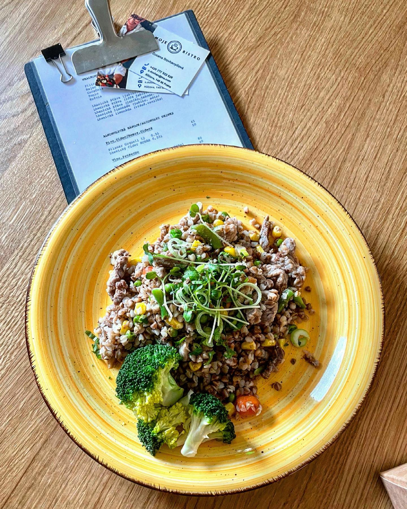

Frankfurtská polievka podľa @mojebistro — Normy Jedál
UTOROK
Ak ešte nepoznáte báječnú a zdravú pohánku dnes si ju u nás môžete dať😉
• frankfurtská polievka
• pohankové rizoto so zeleninou a
mäsom
Babická 1a, Praha 4,14900 (vchod z ul. Klíčová )
Čakáme vás v @mojebistro
#soup #lunch #obed #denninabidka #corona #coronatime #support #mojebistro #tiramisu #frankfurts #frankfurtska #frankfurtskapolevka #frankfurtskapolievka #pohanka #pohankoverizoto
_____________________